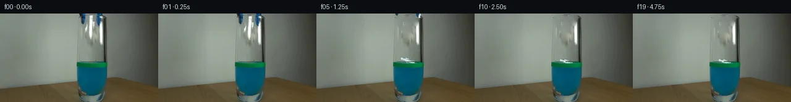

![首帧]()

Round 00
2026-11-05T05:19:16.939271+00:00像素候选变化代码 +266/−0inspection 更新
pixels 096aeda94d7da1c7 · code 1b9b09326d134849
查看本轮 generate.py 真实 diff
--- previous/generate.py
+++ current/generate.py
@@ -0,0 +1,266 @@
+from pathlib import Path
+import numpy as np
+from PIL import Image, ImageDraw, ImageFilter
+
+from artifact_io import save
+
+
+ROOT = Path(__file__).resolve().parent
+W, H = 256, 144
+
+
+def polygon_mask(points, blur=0.0):
+ """Return an 8-bit mask in source-frame coordinates."""
+ mask = Image.new("L", (W, H), 0)
+ ImageDraw.Draw(mask).polygon(points, fill=255)
+ if blur:
+ mask = mask.filter(ImageFilter.GaussianBlur(blur))
+ return np.asarray(mask, dtype=np.uint8)
+
+
+def harmonic_fill(rgb, mask, iterations=280):
+ """Small deterministic local inpaint using boundary interpolation/Jacobi relaxation."""
+ src = rgb.astype(np.float32)
+ out = src.copy()
+ m = mask.astype(bool)
+
+ # Seed every horizontal masked run by interpolating its known endpoints.
+ for y in range(H):
+ xs = np.flatnonzero(m[y])
+ if not len(xs):
+ continue
+ cuts = np.r_[0, np.flatnonzero(np.diff(xs) > 1) + 1, len(xs)]
+ for a, b in zip(cuts[:-1], cuts[1:]):
+ x0, x1 = int(xs[a]), int(xs[b - 1])
+ left = max(0, x0 - 1)
+ right = min(W - 1, x1 + 1)
+ denom = max(1, right - left)
+ for x in range(x0, x1 + 1):
+ q = (x - left) / denom
+ out[y, x] = src[y, left] * (1.0 - q) + src[y, right] * q
+
+ # Relax only unknown pixels; known photographed pixels never move.
+ for _ in range(iterations):
+ pad = np.pad(out, ((1, 1), (1, 1), (0, 0)), mode="edge")
+ avg = (pad[:-2, 1:-1] + pad[2:, 1:-1] +
+ pad[1:-1, :-2] + pad[1:-1, 2:]) * 0.25
+ out[m] = avg[m]
+ return np.clip(out + 0.5, 0, 255).astype(np.uint8)
+
+
+def crop_sprite(src, full_mask, box):
+ x0, y0, x1, y1 = box
+ rgba = np.dstack([src[y0:y1, x0:x1], full_mask[y0:y1, x0:x1]])
+ return Image.fromarray(rgba, "RGBA")
+
+
+def transformed_sprite(sprite, scale, angle):
+ sw, sh = sprite.size
+ nw, nh = max(1, round(sw * scale)), max(1, round(sh * scale))
+ item = sprite.resize((nw, nh), Image.Resampling.LANCZOS)
+ # Pillow uses counterclockwise positive angles.
+ return item.rotate(angle, resample=Image.Resampling.BICUBIC, expand=True)
+
+
+def paste_center(frame, item, cx, cy, wet=False):
+ """Alpha-composite a sprite; wet paper is blue-tinted below the level marker."""
+ arr = np.asarray(item).copy()
+ if wet:
+ yy = np.arange(arr.shape[0])[:, None] + round(cy - arr.shape[0] / 2)
+ underwater = np.clip((yy - 76) / 15.0, 0.15, 0.66)[..., None]
+ target = np.array([10.0, 100.0, 126.0])[None, None, :]
+ arr[..., :3] = np.clip(arr[..., :3] * (1.0 - underwater) +
+ target * underwater, 0, 255).astype(np.uint8)
+ item = Image.fromarray(arr, "RGBA")
+ x = round(cx - item.width / 2)
+ y = round(cy - item.height / 2)
+ layer = Image.new("RGBA", (W, H), (0, 0, 0, 0))
+ layer.alpha_composite(item, (x, y))
+ base = Image.fromarray(frame, "RGB").convert("RGBA")
+ return np.asarray(Image.alpha_composite(base, layer).convert("RGB"))
+
+
+def paste_shifted(frame, sprite, box, dx, dy):
+ x0, y0, _, _ = box
+ layer = Image.new("RGBA", (W, H), (0, 0, 0, 0))
+ layer.alpha_composite(sprite, (x0 + dx, y0 + dy))
+ base = Image.fromarray(frame, "RGB").convert("RGBA")
… diff truncated; 179 more lines …